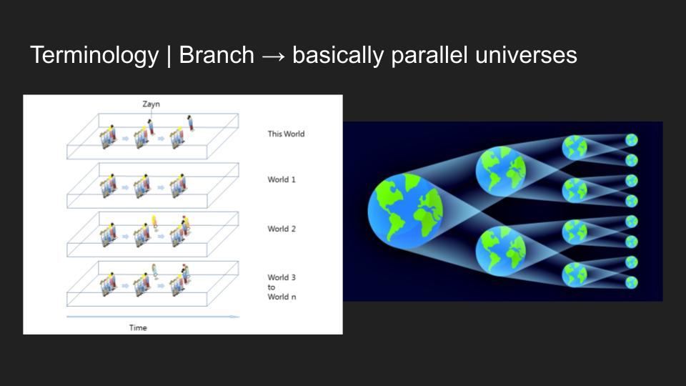
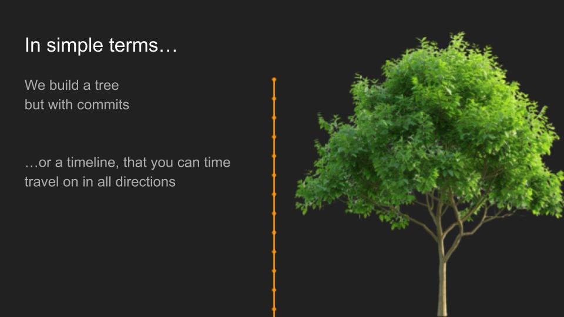
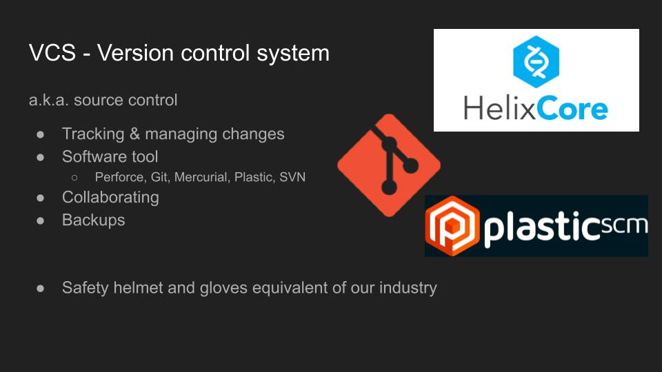
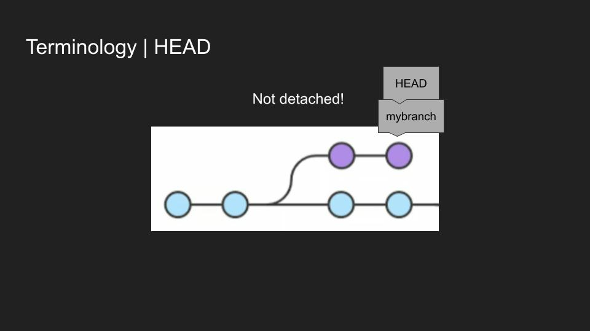

Git crash course
Presentation to teach git
About
Ever since I discovered git in my first year of university I was a big fan. Even when learning other version control systems like Perforce, I still really enjoyed working with git. What I did not like was that my fellow students were struggling to understand it and working with it.
During my internship, I made a git presentation aiming to demystify git. Not only did I want to explain the typical 'getting start' and 'setup' but also some words that are thrown around, common strategies and giving some technical insight of what happens behind the scenes.
I did it in my free time during the internship because during the internship I saw how git was used in a professional setting with a medium sized team, in game development. I presented it at the university of Howest with a lot of positive feedback from students.
Generally, I enjoy compiling something I learned into something digestible. The presenting itself is always a challenge as it requires me to leave my comfort zone, but that's something I wanted to deliberately do.
Screenshots



